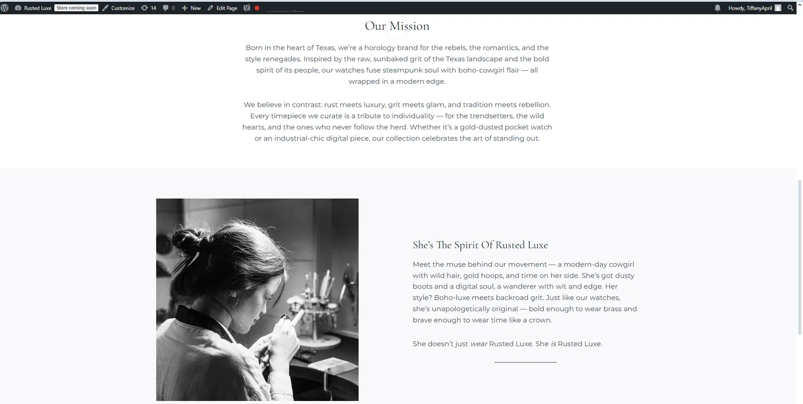
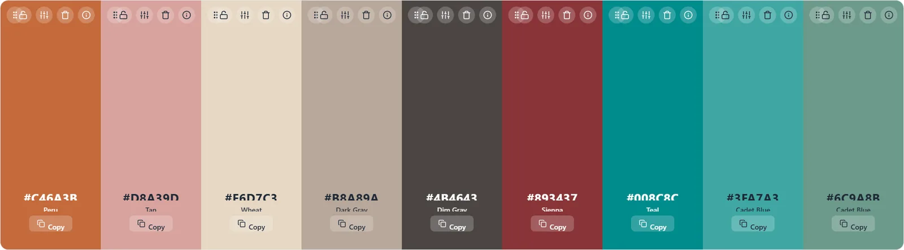
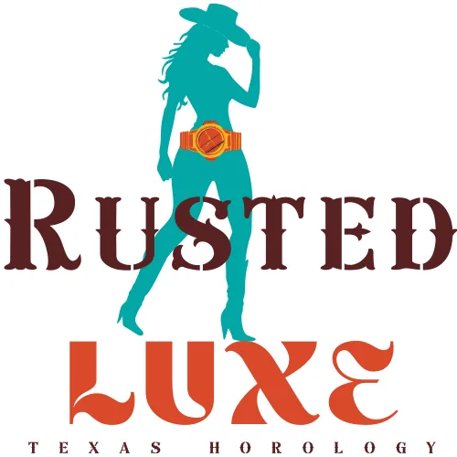
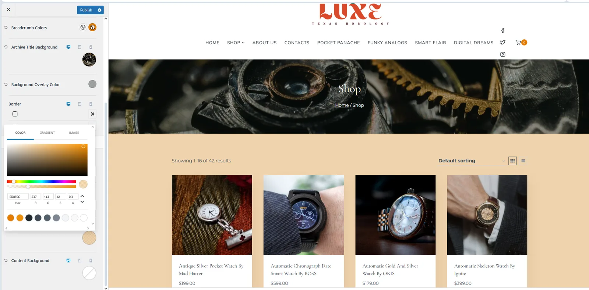
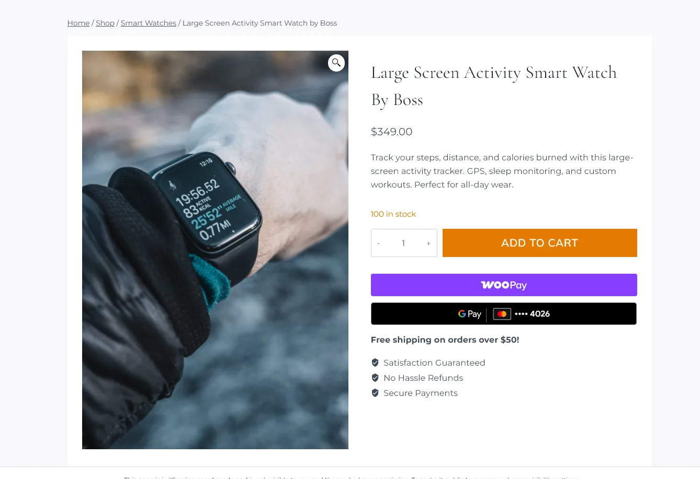
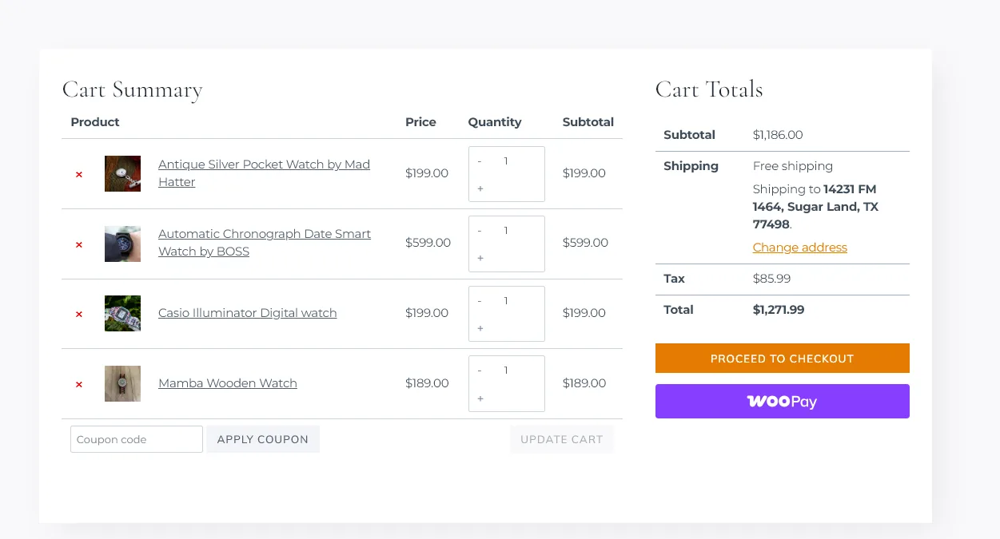
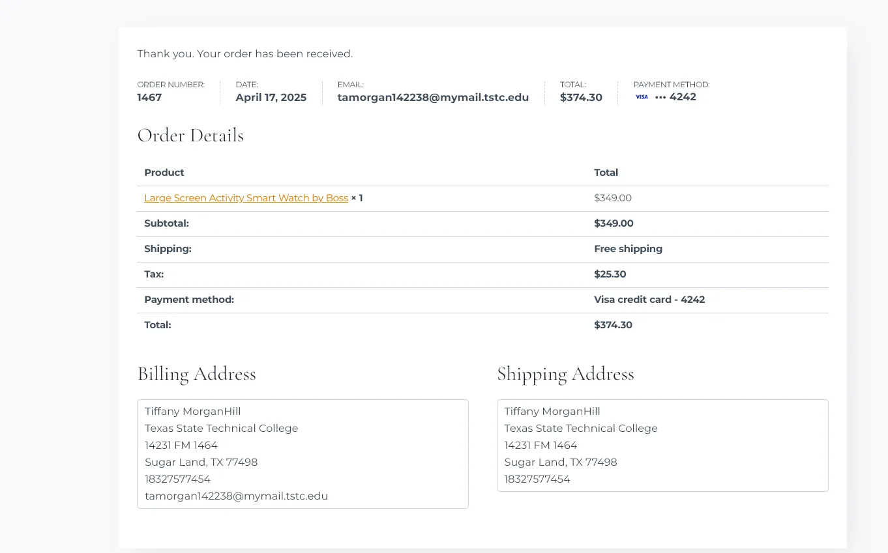
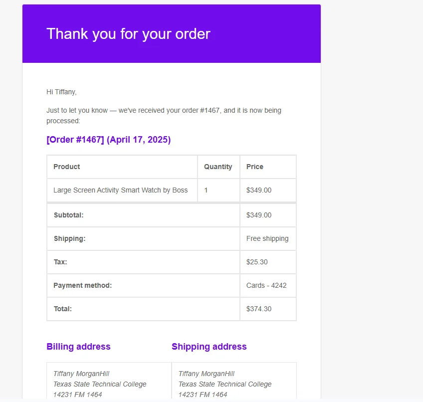

Archived e-commerce case study
Rusted Luxe
A WordPress and WooCommerce storefront that translated a Texas horology concept into a complete brand, product catalog, and tested purchasing experience.

Project overview
Rusted Luxe is a Texas-based horology and accessories concept blending bohemian freedom, steampunk grit, and western elegance. I designed and built the branded e-commerce experience in WordPress and WooCommerce.
My work covered the visual identity, theme customization, product setup, payment and shipping configuration, and the full customer journey from browsing through order confirmation. The goal was to make the store feel immersive without sacrificing clear product discovery or purchasing flow.
Branding and visual identity
I built the identity around Texas landscapes and a “boho meets steampunk” aesthetic. Muted earth tones and metallic accents created a look that felt rugged, grounded, and refined. Typography, graphics, and photography reinforced the contrast between rustic texture and luxury detail.
The custom logo features a styled cowgirl wearing a watch at her waist. A rugged western face for “Rusted” contrasts with a flowing script for “Luxe,” expressing the project’s central idea: grit meets glamour.



Catalog and storefront
I created 32 products organized into four custom categories. Each item included pricing, weight, inventory data, search metadata, descriptive copy, and a custom product title.
I then customized the product grid, category pages, and content backgrounds with branded overlays and carefully controlled opacity. This kept the catalog visually consistent while preserving legibility and usable product comparisons.


Cart, checkout, and fulfillment
I personalized the cart and checkout screens and tested the purchase flow in sandbox mode. WooPay supported native checkout, Google Pay enabled faster mobile payment, and automated tax calculation supplied location-based rates.
For fulfillment, I configured WooCommerce Shipping and migrated the store to the updated shipping experience. The business rules offered free shipping within the continental United States, supported by pricing that absorbed part of the fulfillment cost.



Outcome
A complete commerce experience, documented after launch.
The final build combined a cohesive visual identity, organized product catalog, streamlined checkout, and configured payment, tax, and shipping systems. It strengthened my practical skills in WordPress customization, WooCommerce administration, brand development, e-commerce UX, and end-to-end flow testing.
The original hosted demo was retired after its education hosting access ended. This case study preserves the completed work and the implementation decisions without asking visitors to navigate an unmaintained store.
Continue exploring